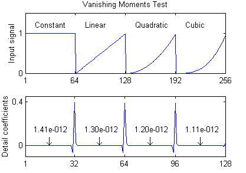

Wavelet CDF 9/7 Implementation
Pascal Getreuer
The Matlab function waveletcdf97.m included in this package is a self-contained M-function for applying the Cohen–Daubechies–Feauveau 9/7 (CDF 9/7) wavelet transform. This wavelet is an especially effective biorthogonal wavelet, used by the FBI for fingerprint compression and selected for the JPEG2000 standard [1].
Function Usage
Y = waveletcdf97(X, L) decomposes X with
L stages of the CDF 9/7 wavelet. For the inverse transform,
waveletcdf97(X, -L) inverts L stages. Filter
boundary handling is half-sample symmetric.
X may be of any size; it need not have size divisible by
2L. For example, if X has length 9, one stage
of decomposition produces a lowpass subband of length 5 and a highpass
subband of length 4. Transforms of any length have perfect
reconstruction (exact inversion).
If X is a matrix, waveletcdf97 performs a
(tensor) 2D wavelet transform. If X has three dimensions,
the 2D transform is applied along the first two dimensions.
Demos
This package includes a demo program, waveletcdf97_demo,
that uses waveletcdf97 for signal approximation. Signal
approximation is the problem of representing a signal with as few
components as possible. This is similar to lossy image compression, but
ignoring the problems of quantization and encoding.
Wavelets are particularly efficient for approximating piecewise-smooth signals. This first demo uses the CDF 9/7 wavelet to represent a piecewise-smooth signal.
NumComponents = 40; % Approximation with 40 components
%%% Construct the test signal %%%
N = 512; % Signal length
t = linspace(-1.7,1.7,N);
X = sign(t).*exp(-t.^4);
%%% Wavelet approximation %%%
Level = 9; % Use 9 levels of decomposition
Y = waveletcdf97(X,Level); % Transform the signal
Y = keep(Y,NumComponents); % Keep only 40 components
R = waveletcdf97(Y,-Level); % Invert to obtain the approximation
norm(X-R) % Compute error
%%% Fourier approximation %%%
Y = fft(X); % Transform
Y = keep(Y,NumComponents); % Keep only 40 components
R2 = real(ifft(Y)); % Invert
norm(X-R2) % Compute errorThe figure below shows the resulting wavelet approximation using only 40 out of 512 components. Fourier approximation with 40 components is shown for comparison. The wavelet approximation has \(L^2\) error of 0.014 while the Fourier approximation has error of 2.244.
The second demo applies waveletcdf97 to image approximation. First, the input image is converted from RGB to the JPEG Y’CbCr colorspace. The Y’CbCr image is transformed using waveletcdf97, all but the largest transform coefficients are set to zero, and then inverse transformed.
X = double(imread('palm.jpg'))/255; % Load the demo image
subplot(2,1,1);
image(X);
axis image
X = RGBToYCbCr(X); % Convert to Y'CbCr
L = 6;
Y = waveletcdf97(X,L); % Transform the image
R = waveletcdf97(keep(Y,1/40),-L); % 40:1 approximation
subplot(2,2,3);
image(YCbCrToRGB(R));
axis image
R = waveletcdf97(keep(Y,1/80),-L); % 80:1 approximation
subplot(2,2,4);
image(YCbCrToRGB(R));
axis image
Tests
In the first test, a random signal X is transformed one
stage, then inverse transformed, and the result is compared to the
original. Mathematically, the transform is exactly inverted—the scheme
is said to have perfect reconstruction. This test verifies that this
property holds to machine precision.
Runs = 100; % Number of runs to average
N = ceil(logspace(... % Lengths to test
log10(15),log10(300),15));
for k = 1:length(N)
% Create random input matrices
X = rand(N(k),1,Runs);
% Forward transform followed by inverse
R = waveletcdf97(waveletcdf97(X,1),-1);
% Compute the average error
AvgError(k) = mean(max(abs(permute(X - R,[1,3,2])),[],1));
fprintf('%3d: Error = %.2e\n',N(k),AvgError(k));
end
plot(N,AvgError,'.-');Code output:
15: Error = 3.34e-016
19: Error = 3.45e-016
24: Error = 4.25e-016
29: Error = 4.30e-016
36: Error = 4.63e-016
44: Error = 4.91e-016
55: Error = 5.00e-016
68: Error = 5.53e-016
84: Error = 5.55e-016
103: Error = 5.99e-016
128: Error = 5.90e-016
158: Error = 6.58e-016
196: Error = 6.90e-016
243: Error = 7.17e-016
300: Error = 7.00e-016The CDF 9/7 wavelet is designed such that where the input signal is locally a polynomial of cubic degree or lower, the resulting detail (highpass) coefficients are equal to zero. A wavelet is said to have “N vanishing moments” if it has this property on polynomials up to degree N-1, so CDF 9/7 has 4 vanishing moments. This test transforms a piecewise polynomial signal and displays the largest detail coefficient magnitudes, verifying that the vanishing moments hold to reasonable accuracy.
N = 64;
t = (0:N-1)/N;
X = [t.^0,t.^1,t.^2,t.^3];
Y = waveletcdf97(X,1);
norm(Y(2*N+2:2.5*N-2),inf) % Largest detail coefficient from t^0
norm(Y(2.5*N+2:3*N-2),inf) % Largest detail coefficient from t^1
norm(Y(3*N+2:3.5*N-2),inf) % Largest detail coefficient from t^2
norm(Y(3.5*N+2:4*N-2),inf) % Largest detail coefficient from t^3
subplot(2,1,1);
plot(X);
subplot(2,1,2);
plot(Y(2*N+1:4*N));Code output:

Locally constant Largest detail coefficient = 1.41e-012
Locally linear Largest detail coefficient = 1.30e-012
Locally quadratic Largest detail coefficient = 1.20e-012
Locally cubic Largest detail coefficient = 1.11e-012Implementation
The code is written specialized for the CDF 9/7 wavelet in lifting scheme implementation. Sweldens’ lifting scheme [2] represents a wavelet transform as a sequence of predict and update steps. Let \(X=[X(1), X(2), \ldots, X(2N)]\) be an array of length \(2N\). The lifting scheme begins with the “polyphase decomposition,” splitting \(X\) into two subbands, each of length \(N\):
\[ \begin{aligned} X_o &= [X(1), X(3), \ldots, X(2N-1)], \\ X_e &= [X(2), X(4), \ldots, X(2N)]. \end{aligned} \]
Since \(X_o\) and \(X_e\) can be merged to recover \(X\), no information has been lost.
Next, the scheme performs lifting steps on the subbands \(X_o\) and \(X_e\). Let \(p\) be a filter, then
\[ X_e' = X_e + p * X_o \]
is called a prediction step, where ∗ denotes convolution. Similarly, \(X_o' = X_o + u * X_e\) is called an update step. Notice that \(X_e\) can always be recovered from \(X_e'\) with
\[ X_e' = X_e - p * X_o. \]
This simple relationship between a forward step and an inverse step is the key to the lifting scheme: any sequence of prediction and update steps can be undone to recover \(X_o\) and \(X_e\).
Any FIR wavelet transform can be factored into a sequence of lifting steps [3]. For the CDF 9/7 wavelet, the lifting scheme decomposition used in waveletcdf97 is
\[\begin{aligned} X_o &= [X(1),X(3),X(5), ... X(2N-1)], \\ X_e &= [X(2),X(4),X(6), ... X(2N)], \\ X_e^1(n) &= X_e(n) + \alpha (X_o(n+1) + X_o(n)), \\ X_o^1(n) &= X_o(n) + \beta (X_e^1(n) + X_e^1(n-1)), \\ X_e^2(n) &= X_e^1(n) + \delta (X_o^1(n+1) + X_o^1(n)), \\ X_o^2(n) &= X_o^2(n) + \gamma (X_e^2(n) + X_e^2(n-1)). \end{aligned}\]
The subbands are then normalized with \(X_o^3 = \kappa X_o^2\) and \(X_e^3 = (\kappa - 1) X_e^2\). For a multi-level decomposition, the algorithm above is repeated with \(X = X_o^3\). Coefficients α, β, δ, γ, κ are irrational values, approximately
\[\begin{aligned} \alpha &\approx -1.58613432, \\ \beta &\approx -0.05298011854, \\ \delta &\approx 0.8829110762, \\ \gamma &\approx 0.4435068522, \\ \kappa &\approx 1.149604398. \end{aligned}\]
The inverse transform is done by performing the lifting steps in the reverse order and with α, β, δ, γ negated.
What if \(X\) has odd length \(2N-1\)? The trick is to extrapolate one extra element \(X(2N)=x\) in such a way that transforming the augmented \(X\) has \(X_e^3(N)=0\). This zero element can then be thrown away without losing information. The result is a decomposition with \(N\) elements in \(X_o^3\) and \(N-1\) elements in \(X_e^3\) for a total of \(2N-1\) elements; the decomposition is nonredundant. To invert an odd-length transform, append the zero element \(X_e^3(N)=0\) and proceed with the usual even-length inverse transform.
The formula for the extrapolated element \(x\) such that \(X_e^3(N)=0\) is a linear function of the
elements of \(X\) that depends on the
filter boundary handling. For the half-sample symmetric boundary
handling used in waveletcdf97, the extrapolation is
\[ \begin{aligned} &x = \frac{-2}{1 + 2\beta\delta} \bigl[ \alpha\beta\delta X(2N-3) \\ &+ \beta\delta X(2N-2) + (\alpha + 3\alpha\beta\delta + \delta) X(2N-1) \bigr]. \end{aligned} \]
\[ x = \frac{-2}{1 + 2\beta\delta} \bigl[ \alpha\beta\delta X(2N-3) + \beta\delta X(2N-2) + (\alpha + 3\alpha\beta\delta + \delta) X(2N-1) \bigr]. \]
References
M. Unser and T. Blu. “Mathematical Properties of the JPEG2000 Wavelet Filters.” IEEE Trans. on Image Proc., vol. 12, no. 9, Sep. 2003.
W. Sweldens. “The Lifting Scheme: A Construction of Second Generation Wavelets.” SIAM J. Mathematical Analysis, vol. 29, no. 2, pp. 511-546, 1997.
I. Daubechies and W. Sweldens. “Factoring Wavelet Transforms into Lifting Steps.” 1996.